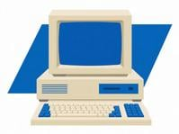
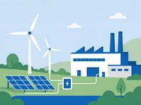
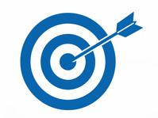

RISE Strategy
Under its RISE framework (Responsible, Inclusive, Sustainable, Enabling), Intel set ambitious 2030 goals, including driving industry-leading progress on climate action, water stewardship, and waste reduction.
intel.
Explore Intel's journey through time, discovering how our commitment to innovation has shaped a more sustainable future for technology and our planet.
Scroll to view the timeline. Hover over or focus a card to learn more.
1968
Robert Noyce and Gordon Moore leave Fairchild Semiconductor to found Intel — the start of a company that would spend six decades redefining computing, and later, redefine what responsible manufacturing looks like.
1971
The Intel 4004 becomes the world's first commercial microprocessor, packing what used to fill a room onto a single chip — a huge cut in the energy and materials needed to compute.

1978
Intel launches the 8086, establishing the x86 architecture that still powers most PCs today — proof that one efficient design can stay useful for decades instead of being thrown away.
1985
The 32-bit Intel386 introduces real multitasking — doing far more work per chip and per watt, an early lesson in getting more performance out of the same footprint.
2004
Intel eliminates most of the lead used in chip manufacturing, one of the semiconductor industry's earliest moves toward safer, cleaner production.

2008
The EPA names Intel the largest voluntary purchaser of green power in the United States, setting the tone for a decade of renewable energy investment.
2014
Intel completes a fully conflict-free supply chain for the tin, tantalum, tungsten, and gold in its processors — a multi-year effort to trace materials back to responsible sources.

2020
Intel unveils its RISE strategy, formalizing 2030 targets across climate, water, waste, and inclusion — turning sustainability from a side project into a company-wide strategy.
2024
Intel Foundry debuts as a systems foundry business built for the AI era, designed from the ground up around more sustainable manufacturing.
2030
By 2030, Intel is targeting net positive water use, 100% renewable electricity across its operations, and zero total waste to landfill — the next chapter in this timeline, still being written.
Under its RISE framework (Responsible, Inclusive, Sustainable, Enabling), Intel set ambitious 2030 goals, including driving industry-leading progress on climate action, water stewardship, and waste reduction.
In 2022, Intel committed to achieving net-zero greenhouse gas emissions (Scope 1 and 2) by 2040. That commitment relies on decades of investment in energy efficiency, renewable power, and partnerships across the supply chain.
Intel is working to restore more water than it uses each year, in cooperation with local communities, and to send zero total waste to landfill by 2030 by recycling materials and moving toward a circular economy.